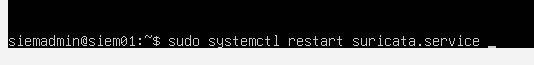

Security Stack
Overview
The SOC lab security stack combines endpoint monitoring, network detection, and centralized SIEM analysis to provide full visibility across the environment.
- Endpoint visibility using Sysmon
- Network monitoring using Suricata IDS
- Centralized log analysis with Wazuh SIEM
Wazuh SIEM
Central platform responsible for log collection, correlation, and alerting.
Sysmon
Provides detailed endpoint telemetry including process creation and network activity.
Suricata IDS
Monitors network traffic and detects malicious activity using rules and signatures.
Windows Event Logs
Provides authentication and system-level logging across domain machines.
Tool Integration
- Sysmon → Endpoint telemetry
- Suricata → Network detection
- Wazuh → SIEM correlation engine
Why this matters:
Correlating multiple data sources provides better context and reduces false positives.
Wazuh agent (Ubuntu)
The Wazuh agent is responsible for collecting logs and telemetry from endpoint machines and securely forwarding them to the Wazuh manager for analysis.
- Installed Wazuh agent on Ubuntu endpoint
- Configured connection to Wazuh manager (IP, port, protocol)
- Authenticated the agent with the manager
- Verified connectivity and agent status
wazuh agent software installation
download script

agent configuration
edit the configuration file

add the wazuh server IP address, port and protocol

run agent authentication

restart the service and check the status

Wazuh agent (Windows)
Wazuh agent Installation
download agent software

agent configuration
open ossec-agent in program files

open ossec.conf

add the wazuh server IP address, port and protocol

tell the agent to collect events from the system

run agent authentication

start the wazuh-agent

check agent status

Wazuh Server (Ubuntu)
The Wazuh server acts as the central SIEM component, responsible for collecting, processing, and correlating logs from all connected agents and data sources.
- Installed Wazuh manager on Ubuntu
- Configured agent communication and registration
- Integrated Suricata logs into Wazuh
- Verified log ingestion and alert generation
wazuh manager software installation
download script

check status

browser access
access wazuh app in the browser with IP address - 192.168.59.40

Manager configuration
list all registered agents

open configuration file

tell wazuh to collect json logs from Suricata

restart the Wazuh service

Sysmon (Windows)
Sysmon is a Windows system service that provides detailed visibility into system activity, including process creation, network connections, and file modifications.
- Servers: DC01, FILE01
- Clients: IT01, HR01
- The installation procces is the same on all machines
Sysmon Installation
download sysmon files

create a sysmon file in C: and add the following files

install sysmon with the command

check status

Sysmon agent Log Collection
open sysmon event logger in Event Viewer: Application and services logs -> Microsoft -> Windows -> Sysmon

Create a system event with command: notepad.exe

see that an event was logged from sysmon

Connecting Sysmon to Wazuh
in ossec.conf (wazuh configuration file) add sysmon events

test - create a local event

the event appears in wazuh events

Suricata IDS
Suricata is a network-based intrusion detection system (IDS) used to monitor traffic and detect malicious patterns such as scans, exploits, and suspicious connections.
- Installed Suricata on the monitoring server
- Configured network interface for traffic inspection
- Installed and updated detection rules
- Created custom detection rule for Nmap scan activity
- Mapped detection to MITRE ATT&CK technique
suricata Installation
install Suricata software

check status

suricata configuration
open Suricata Configuration File

set the network interface

install detection rules for Suricata

check that rules files wew created in the Suricata rules folder

in suricata.yaml file set the rules files and directory

restart the suricata service

suricata custom Detection Rules
open local.rules file

create a custom alert rule for detecting Nmap scans

open local_rules.xml file

create a custom Wazuh rule that maps the Nmap scan detection to MITRE ATT&CK technique T1046 (Network Service Discovery)

Data Flow
Logs are generated from endpoints (Sysmon, Windows Event Logs) and network sensors (Suricata).
Wazuh agents collect and forward logs to the Wazuh manager, where events are analyzed and correlated.
Detection rules trigger alerts, which are mapped to MITRE ATT&CK techniques and visualized in the SIEM dashboard.
Detection Capabilities
- Brute-force login attempts (Event ID 4625)
- Suspicious process execution (Sysmon Event)
- Network scanning activity (Nmap detection via Suricata)
- Privilege escalation behavior
- MITRE ATT&CK mapped detections